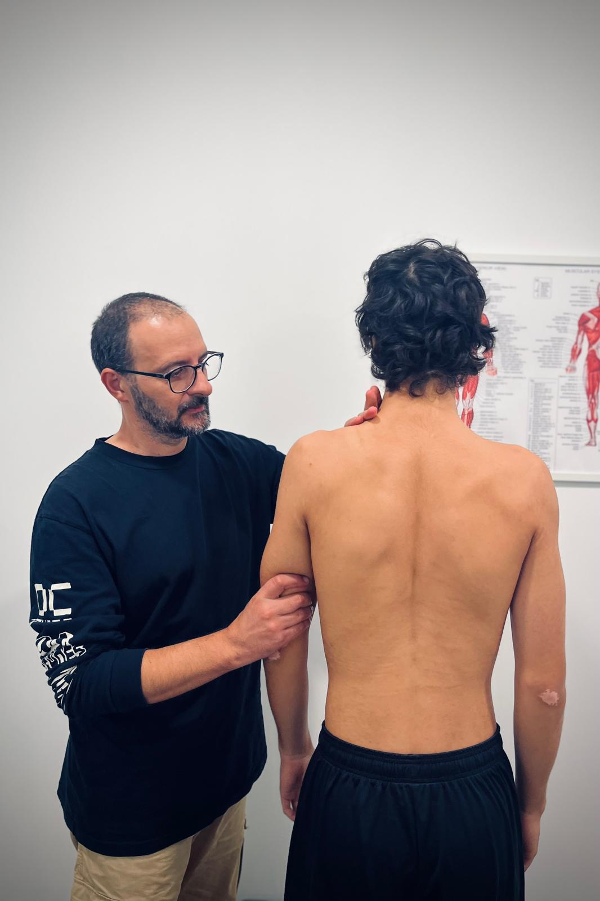
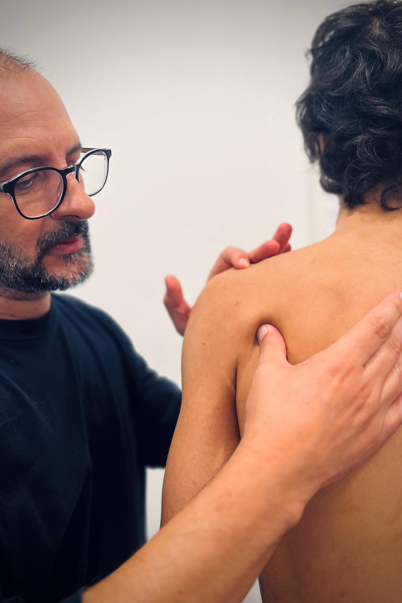
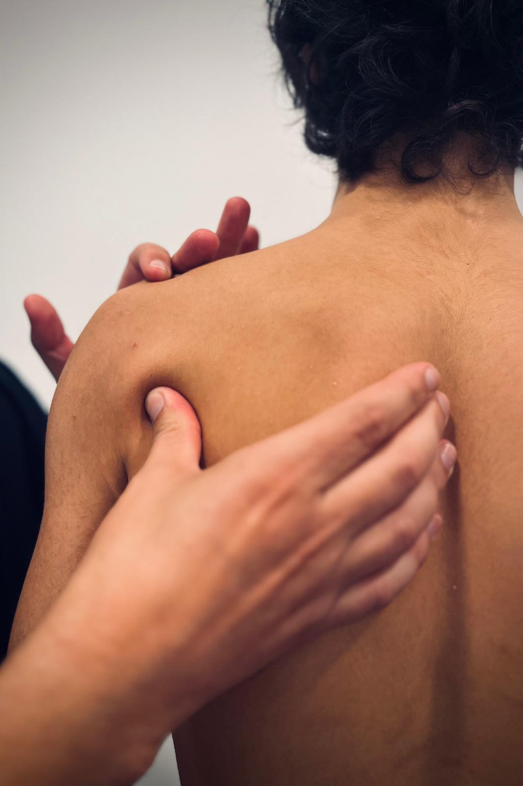
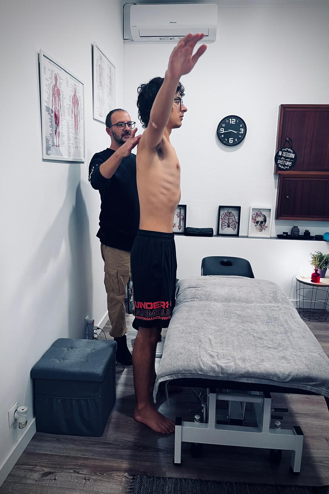

Condição física e força
O treino pode ter como objetivo desenvolver a condição física e a força. A seleção de exercícios e a progressão devem refletir o ponto de partida individual.
Personal trainer e osteopata em Lisboa
O Paulo trabalha com pessoas de todas as idades e objetivos: melhorar postura, perder peso, recuperar cirurgias, preparar uma maratona ou simplesmente viver com mais energia. É um dos primeiros em Portugal a desenvolver treino para doentes oncológicos.
Adora o mar, a família e a adrenalina de um novo desafio. Ama viajar, seja um trilho a pé, um passeio de jipe ou uma viagem de mota.
"O Paulo é uma pessoa de pessoas, sempre pronto para uma boa conversa."
Paulo Morais é técnico de osteopatia, mantendo o mindset de tratar cada cliente como único, com um acompanhamento integrado e personalizado. Além da atenção à patologia e faixa etária, tem o cuidado de cruzar com o estilo de vida de cada um, para que as sessões sejam eficazes.
Paulo Morais é especialista em treino personalizado, com mais de 20 anos de experiência. Depois de um percurso profissional em ginásios, escolas, clubes desportivos e clínicas de fisioterapia, desenvolveu a sua metodologia única, num processo de um para um. Hoje, acompanha cada cliente com um plano exclusivo e adaptado às suas necessidades, patologias e estilo de vida.
Seja o objetivo melhoria de postura, perda de peso, recuperação de cirurgia ou correr uma maratona, por exemplo. É um dos pioneiros em Portugal em treino especializado para doentes oncológicos, uma área de conhecimento onde continua a investir. Outra característica que o destaca enquanto personal trainer é o facto de ser osteopata, o que amplia muito as estratégias que pode aplicar em cada sessão de treino.
O acompanhamento de Paulo Morais inclui treino individual e privado, treino em grupo, treino online, osteopatia e treino oncológico após o cancro. O formato de acompanhamento considera as necessidades, os objetivos e a rotina de cada pessoa.
O centro está em Lisboa e as sessões de osteopatia são presenciais. O treino online permite acompanhar clientes em Portugal, na União Europeia e em países lusófonos, de língua inglesa e de língua espanhola.




O treino personalizado com Paulo Morais consiste num acompanhamento individual, adaptado aos objetivos, à condição física e ao estilo de vida. O serviço presencial tem base em Lisboa.
A modalidade permite concentrar o trabalho numa pessoa, com um plano ajustado às suas necessidades. Integra uma oferta que inclui treino em grupo, acompanhamento online, osteopatia e exercício oncológico.
A escolha do treino privado depende do objetivo, da experiência e do tipo de acompanhamento pretendido. O programa pode considerar diferentes prioridades, sem estabelecer resultados iguais para todas as pessoas.
O treino pode ter como objetivo desenvolver a condição física e a força. A seleção de exercícios e a progressão devem refletir o ponto de partida individual.
O plano considera o estilo de vida e a disponibilidade para treinar. A organização do acompanhamento procura tornar a prática compatível com a rotina.
A experiência de Paulo Morais inclui pessoas com objetivos como melhorar a postura ou preparar uma maratona. Cada objetivo exige uma proposta adequada ao contexto individual.
O contacto inicial permite esclarecer o objetivo e a modalidade mais adequada. A definição do plano deve considerar a experiência de treino e as necessidades relevantes para a prática.
No primeiro contacto, podem ser apresentados os objetivos, a experiência anterior e a disponibilidade. Estas informações ajudam a enquadrar o pedido de acompanhamento individual.
O treino privado presencial realiza-se em Lisboa, com condições acordadas no contacto. Para acompanhamento à distância, existe também a modalidade de treino online.
O programa individual considera as necessidades, o estilo de vida e a evolução do treino. As dúvidas e dificuldades devem ser comunicadas durante o acompanhamento.
Esta modalidade corresponde a acompanhamento individual, também procurado como treino privado ou personal training. O treino em grupo constitui uma opção distinta, descrita numa página própria.
A experiência anterior é uma informação relevante para definir o ponto de partida. O contacto inicial permite esclarecer objetivos e necessidades antes de escolher o acompanhamento.
O acompanhamento presencial tem base em Lisboa. O treino online permite solicitar acompanhamento à distância em Portugal e nos mercados internacionais abrangidos pelo serviço.
Os preços, a disponibilidade e as condições do acompanhamento são esclarecidos diretamente no contacto. O pedido pode ser enviado por WhatsApp ou por email, com indicação da modalidade pretendida.
O contacto permite esclarecer o acompanhamento individual em Lisboa e as condições do serviço. Para enquadrar o pedido, basta indicar o objetivo, a modalidade pretendida e a disponibilidade.